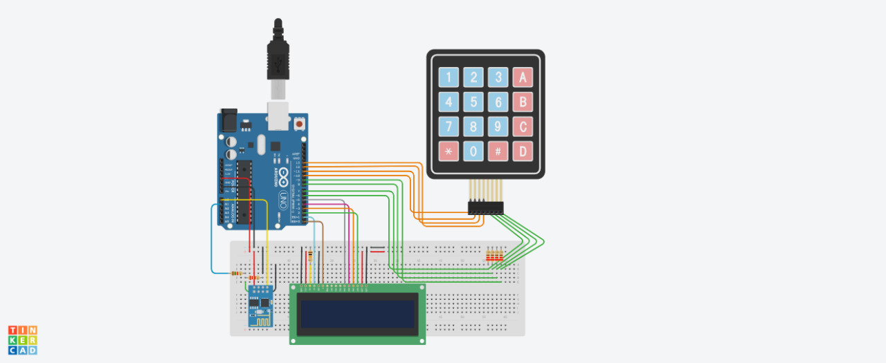

Projeto desenvolvido pela turma de WebServices 2018 do TSI, IF Barbacena - MG
Projeto desenvolvido com a finalidade de implementar os conceitos visto em aula sobre WebServices, Arduíno e a nova tecnologia de armazenamento, a Blockchain.
O funcionamento é baseado nas seguintes etapas.
Protótipo do Arduíno
Requirimentos
Execução